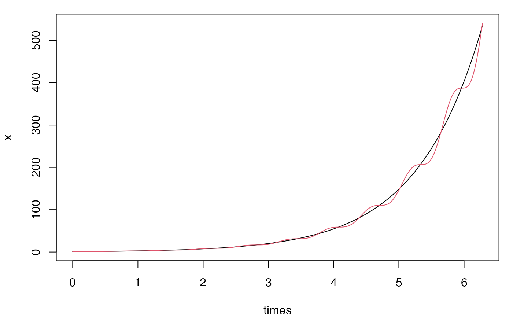
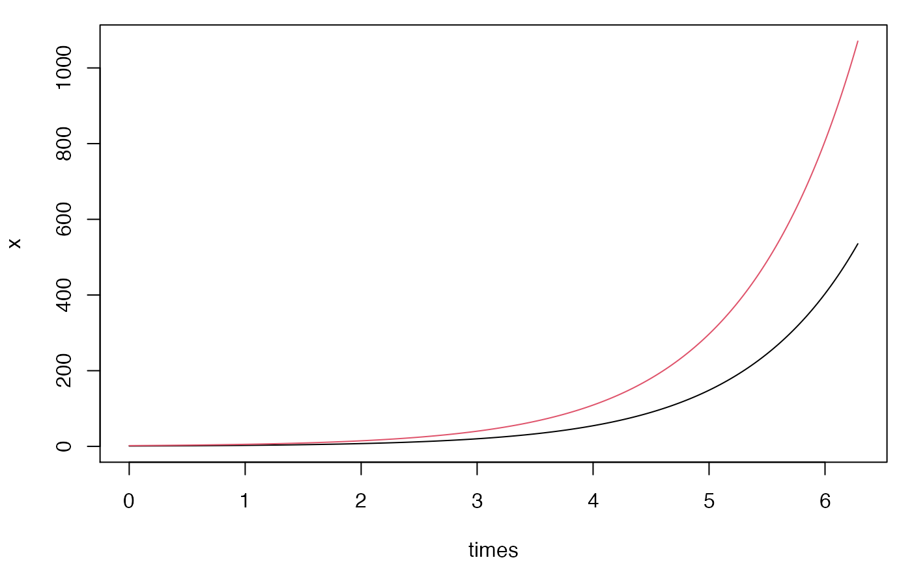
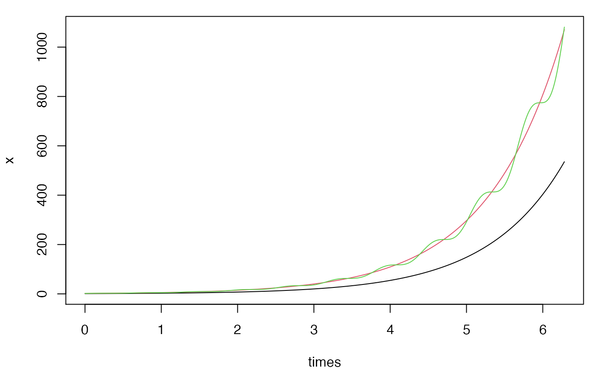

The function ode provides solvers for systems of ordinary differential equations of the type:
\[ \frac{dy}{dt} = f(t,y), \quad y(t_0)=y_0 \]
where \(y\) is the vector of state variables. Two solvers are available: the simpler and faster Euler scheme1 or the more accurate 4-th order Runge-Kutta method2. Although many packages already exist to solve ordinary differential equations in R3, they usually represent the function \(f\) either with an R function or with characters. While the representation via R functions is usually more efficient, the symbolic representation is easier to adopt for beginners and more flexible for advanced users to handle systems that might have been generated via symbolic programming. The function ode supports both the representations and uses hashed environments to improve symbolic evaluations.
The vector-valued function \(f\) representing the system can be specified as a vector of characters, or a function returning a numeric vector, giving the values of the derivatives at time \(t\). The initial conditions are set with the argument var and the time variable can be specified with timevar.
\[ \frac{d}{dt} \begin{bmatrix} x\\ y \end{bmatrix}= \begin{bmatrix} x\\ x(1+\cos(10t)) \end{bmatrix}, \quad \begin{bmatrix} x_0\\y_0 \end{bmatrix}= \begin{bmatrix} 1\\1 \end{bmatrix} \]
f <- c("x", "x*(1+cos(10*t))")
var <- c(x=1, y=1)
times <- seq(0, 2*pi, by=0.001)
x <- ode(f = f, var = var, times = times, timevar = "t")
matplot(times, x, type = "l", lty = 1, col = 1:2)
\[ \frac{d}{dt} \begin{bmatrix} x\\ y \end{bmatrix}= \begin{bmatrix} x\\ y \end{bmatrix}, \quad \begin{bmatrix} x_0\\y_0 \end{bmatrix}= \begin{bmatrix} 1\\2 \end{bmatrix} \]
f <- function(x, y) c(x, y)
var <- c(x=1, y=2)
times <- seq(0, 2*pi, by=0.001)
x <- ode(f = f, var = var, times = times)
matplot(times, x, type = "l", lty = 1, col = 1:2)
\[ \frac{d}{dt} \begin{bmatrix} x\\ y\\ z \end{bmatrix}= \begin{bmatrix} x\\ y\\ y*(1+cos(10*t)) \end{bmatrix}, \quad \begin{bmatrix} x_0\\y_0\\z_0 \end{bmatrix}= \begin{bmatrix} 1\\2\\2 \end{bmatrix} \]
f <- function(x, t) c(x[1], x[2], x[2]*(1+cos(10*t)))
var <- c(1,2,2)
times <- seq(0, 2*pi, by=0.001)
x <- ode(f = f, var = var, times = times, timevar = "t")
matplot(times, x, type = "l", lty = 1, col = 1:3)
Guidotti, E. (2020). “calculus: High dimensional numerical and symbolic calculus in R”. https://arxiv.org/abs/2101.00086
A BibTeX entry for LaTeX users is